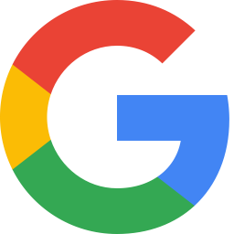
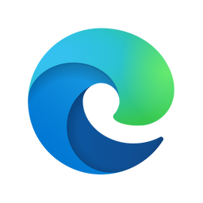
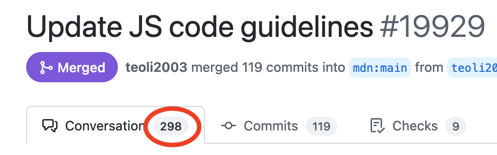

Open Web Docs and MDN
Documenting the web platform
About me
- Will Bamberg
- Technical Writer for Open Web Docs
- https://github.com/wbamberg
What is Open Web Docs?
An organization employing technical writers to maintain and extend web documentation
Why Open Web Docs?
- Web platform documentation is critical digital infrastructure
- Web developers need access to good quality documentation
- Good documentation depends on dedicated professional writers and documentation engineers
Sponsors
Canva

Google Open Source
Igalia
JetBrains

Microsoft Edge
 Meta
Meta
...and 162 individual sponsors
Staff
- Estelle Weyl @Estelle
- Florian Scholz @elchi3
- Jean-Yves Perrier @teoli2003
- Vinyl Da.i'gyu-Kazotetsu @queengooborg
- Will Bamberg @wbamberg
We mostly work on MDN...
What is MDN?
- The top destination for developers to learn about web technologies
- An open source project, whose content is CC-BY-SA licensed
- Owned by Mozilla, who employs the developers and a team of writers.
- The second most-cited docs site on Stack Overflow, after docs.microsoft.com (source)
What does MDN include?
About 11,000 pages, including:
- JavaScript (1000 pages)
- CSS (1000 pages)
- Web APIs (6000 pages)
- HTML (250 pages)
- HTTP (250 pages)
How is MDN made?
A set of GitHub repositories, including:
mdn/content
In 2 years as a GitHub repository:
- ~2600 contributors
- 14,000 merged PRs
Open Web Docs and MDN
We contribute to mdn/content in 2 ways:
- Day to day maintenance
- Projects
mdn/content maintenance
In H1 2022, we completed 3214 reviews of mdn/content PRs
- About 17 reviews/day
- About 66% of the total number of reviews
Projects
- Anyone can file a project proposal
- github.com/openwebdocs/project/issues
- Steering Committee helps guide decisions:
Apple
Coil
Google
Meta
Microsoft Edge
Canva
Igalia
JetBrains
Mozilla
Samsung Internet
W3C
Selected projects
- Markdown conversion
- WebXR documentation
- Code sample modernization
- ARIA role documentation
Markdown conversion
- Converted MDN source - all 11,000 pages - from HTML to Markdown
- Improved MDN authoring experience
- Consensus-building among all MDN maintainers: OWD, Mozilla, W3C
WebXR documentation
- Updated and expanded WebXR docs
- Documented features from 10 WebXR specifications
- Wrote 131 new MDN reference pages
- Collaborated with W3C WebXR standards working group
Code sample modernization
- Updated JS examples coding standard
- Updated code samples
- OWD led and mentored volunteers 
ARIA role documentation
- Complete documentation for ARIA roles
- Collaborated with accessibility experts
Selected upcoming projects
- Revamp performance API docs (requested by the Performance WG)
- Revamp CSS color docs
- Implement Prettier and ESLint for code samples
How you can help
- Follow us @OpenWebDocs
- Propose projects
- Ask your employer to sponsor us
Proposing projects
- github.com/openwebdocs/project/issues
- Anyone can file a project proposal
- We love collaborating with domain experts
- We love to get input from W3C groups
- We're currently picking projects for Q4
Sponsorship
- Ask your employer to sponsor us!
- opencollective.com/open-web-docs/
- Our work can only continue with support from sponsors
- Sponsors can join in our Governing or Steering Committees, to participate at a deeper level: https://openwebdocs.org/membership/
Thanks!
- will@openwebdocs.org
- https://openwebdocs.org
- https://wbamberg.github.io/tpac-owd-2022